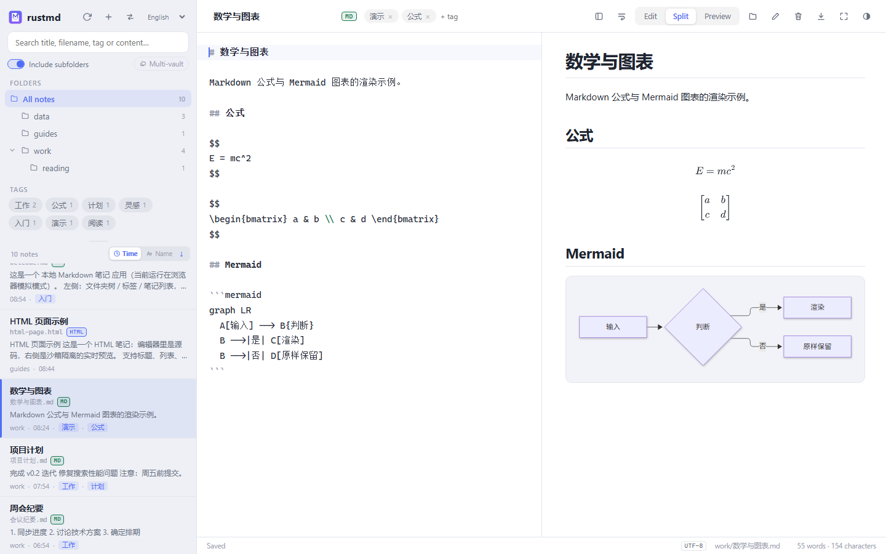

Local-first notes app
rustmd
Markdown & HTML notes
that stay plain files.
HTML preview in-app
CSV · TXT · JSON
Offline · no account
English / 中文 UI
Windows
macOS
Linux
Rust + Tauri 2
Open source (GPL-3.0)
